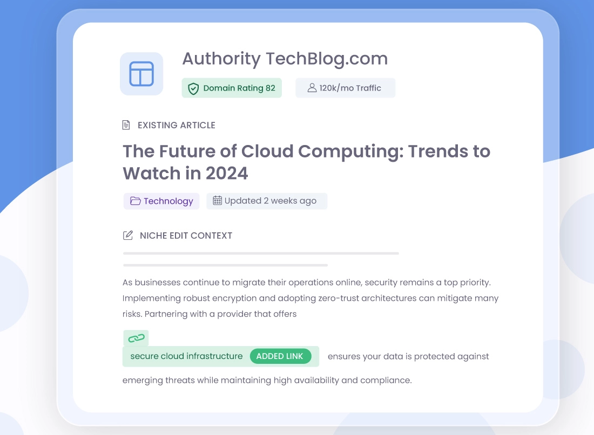

Article-level relevance
Review the actual section, publication audience, and whether the article is maintained. Choose a page where the proposed reference is useful without forcing a keyword.
Add useful references to existing articles
Find published articles where an editor-approved update, resource, or source genuinely helps the reader understand the subject or take the next step.

Review the actual section, publication audience, and whether the article is maintained. Choose a page where the proposed reference is useful without forcing a keyword.
Match the reference to a helpful resource or directly relevant service explanation. Avoid redirect chains, misleading anchors, and links to pages that do not answer the reader’s question.
Require publisher approval, check the live placement and link attributes, and disclose payment when applicable. Record changes rather than assuming placements are permanent.
Ask whether the paragraph would be better if the reference were added even without any SEO benefit. If the answer is no, prioritize making a stronger resource or choosing a more relevant article.
If you have a useful resource to share, explore how Grid Rankers approaches niche edits in published articles. See Google’s link spam policy for the platform’s current rules.
A niche edit updates an existing article. A guest post adds a new article. Choose based on whether the audience is better served by a small addition or a complete explanation.
Google treats buying or selling links for ranking purposes as link spam. Paid placements should use sponsored or nofollow attributes as appropriate.
No. Publishers control their pages and may update or remove references. Track placement status and evaluate referral usefulness over time.
Tell us what you sell, where you work, and what a qualified lead looks like for your team.